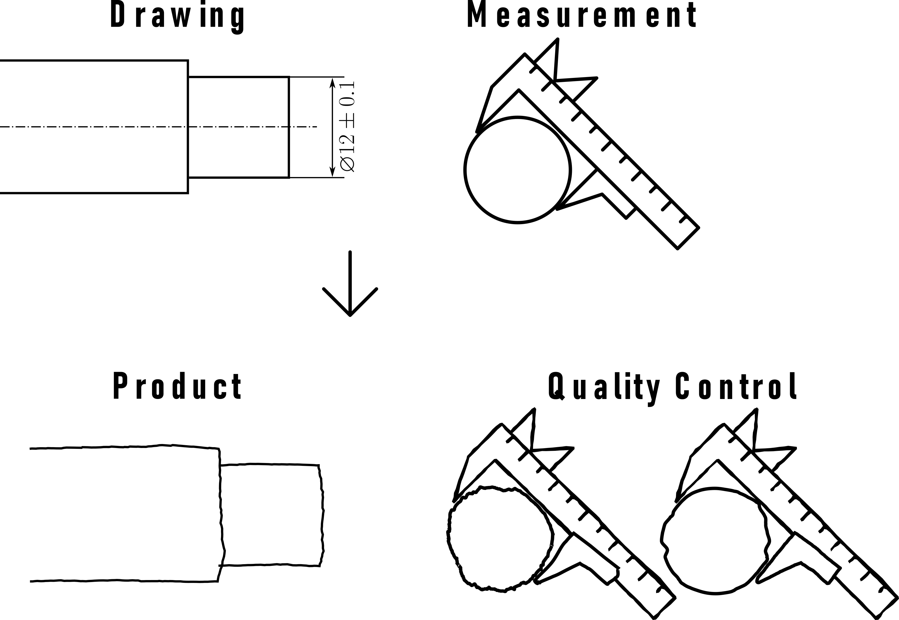
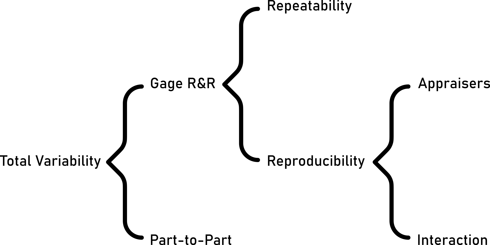
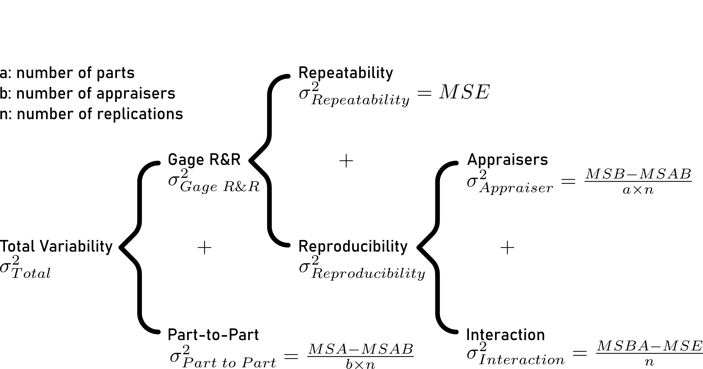

Production Statistics
Introduction to Production Statistics
Control Charts for Variables
The production
Figure 1: The production data
Run Chart
\[\begin{align} UCL &= \bar{x} + 2.58\frac{sd(x)}{\sqrt{n}} \;\text{with}\;GroupSize=1 \\ LCL &= \bar{x} - 2.58\frac{sd(x)}{\sqrt{n}} \;\text{with}\;GroupSize=1 \\ UWL &= \bar{x} + 1.96\frac{sd(x)}{\sqrt{n}} \;\text{with}\;GroupSize=1 \\ LWL &= \bar{x} - 1.96\frac{sd(x)}{\sqrt{n}} \;\text{with}\;GroupSize=1 \end{align}\]
X-bar chart
\[\begin{align} UCL &= \bar{x} + 2.58\frac{sd(x)}{\sqrt{n}} \;\text{with}\;GroupSize=5 \\ LCL &= \bar{x} - 2.58\frac{sd(x)}{\sqrt{n}} \;\text{with}\;GroupSize=5 \\ UWL &= \bar{x} + 1.96\frac{sd(x)}{\sqrt{n}} \;\text{with}\;GroupSize=5 \\ LWL &= \bar{x} - 1.96\frac{sd(x)}{\sqrt{n}} \;\text{with}\;GroupSize=5 \end{align}\]
S-Chart
\[\begin{align} UCL &= \sigma * \sqrt{\frac{\chi^2_{1-\beta=0.995;n-1}}{n-1}} \;\text{with}\;n=5 \\ LCL &= \sigma * \sqrt{\frac{\chi^2_{1-\beta=0.005;n-1}}{n-1}} \;\text{with}\;n=5 \\ UWL &= \sigma * \sqrt{\frac{\chi^2_{1-\beta=0.975;n-1}}{n-1}} \;\text{with}\;n=5 \\ LWL &= \sigma * \sqrt{\frac{\chi^2_{1-\beta=0.025;n-1}}{n-1}} \;\text{with}\;n=5 \end{align}\]
Control Charts for Attributes
NP Chart
\[\begin{align} CL = n\bar{p} \pm 3\sqrt{n\bar{p}(1-\bar{p})} \end{align}\]
P Chart
\[\begin{align} CL = \bar{p} \pm 3\sqrt{\frac{\bar{p}(1-\bar{p})}{n}} \end{align}\]
Process Capability and Six Sigma
How good is good enough?
\[ P_{ges} = ?\]

The Six Sigma Project Model (DMAIC)

Figure 9: DMAIC Process
Process Capability - idea

Figure 10: The idea of process capabilities
High Accuracy - Low Precision

Figure 11: The spreaded - High Accuracy, Low Precision
Low Accuracy - Low Precision

Figure 12: The worst - Low Accuracy, Low Precision
Low Accuracy - High Precision
Figure 13: The missing the mark - Low Accuracy, High Precision
High Accuracy - High Precision
Figure 14: The desired - High Accuracy, High Precision
Computing Process Capabilities
\[\begin{align} C_{p} &= \frac{USL-LSL}{6*sd} \label{CpCalc} \\ C_{pk} &= \frac{\min(USL-\bar{x},\bar{x}-LSL)}{3*sd} \label{CpkCalc} \end{align}\]
Process Capabilities and ppm
Figure 16: The failed parts per million vs. the \(C_{pk}\)
The role of measurement accuracy in production
Measurement Errors
Figure 17: Measurement Errors arise during every measurement.
Significant Digits in Production
Figure 18: Drawings and specifications are just an approximation of reality.
General Rule of Thumb
To maintain accuracy and avoid overestimating the precision of results, it’s advisable not to report more significant digits than justified by the precision of the input measurements.
Rule of Ten
In practical terms, for a number to be considered significant, it should be at least ten times greater than the smallest unit of measure (i.e., the least significant digit). This helps in avoiding overestimating the precision and ensures that the reported figures are meaningful.
Addition and Subtraction
When performing addition or subtraction, the result should be reported with the same number of decimal places as the measurement with the fewest decimal places. For instance, if you add \(12.11\) (two decimal places) to \(0.4\) (one decimal place), the result should be reported with one decimal place, as \(12.5\).
Multiplication and Division
When performing multiplication or division, the result should be reported with the same number of significant digits as the measurement with the fewest significant digits. For example, if you multiply \(2.34\) (three significant digits) by $0.0$5 (one significant digit), the result should be reported with one significant digit, as \(0.1\).
edge cases

Figure 19: Edge cases during measuring a simple part.
Measurement System Analysis Type I
In conducting a Measurement System Analysis Type I (MSA1), the initial step involves focusing on gage as the sole source of variation. To achieve this, 50 measurements are performed, each repeated on a reference part. This process allows for the isolation and assessment of the gage’s impact on the overall measurement system, ensuring that any observed variability is attributed solely to the gage. The process of doing a MSA1 is fairly standardized.
Potential Capability index \(C_g\)
\[\begin{align} C_g = \frac{K/100*Tol}{L*\sigma} \label{Cg} \end{align}\]
- \(Tol\)
- Tolerance
- \(C_g\)
- Capability Gage
- K
- percentage of the tolerance (\(20\%\))
- \(\sigma\)
- standard deviations of the tolerance
- L
- number of standard deviations that represent the process (\(6\times\))
Capability index with systematic error \(C_{gk}\)
\[\begin{align} C_{gk} = \frac{(0.5*K/100)*Tol - |\bar{x}-x_{true}|}{3*\sigma} \label{Cgk} \end{align}\]
- \(Tol\)
- Tolerance
- \(\bar{x}\)
- mean of the measurements
- K
- percentage of the tolerance (\(20\%\))
- \(x_{true}\)
- the “true” value of the reference (calibration)
- \(\sigma\)
- standard deviation of the measurements
MSA1 example

- \(x_{true} = 20.3020\)

Data Distribution
Figure 20: By definition, measurement errors shoul be normally disitrbuted.
computed values
| Cg | Cgk |
|---|---|
| 2.13 | 2.02 |
MSA1 in the era of AI?


Measurement System Analysis Type II (Gage R&R)

Definitions
- Accuracy
- The closeness of agreement between a test result and the accepted reference value(Cano, Moguerza, and Redchuk 2012).
- Trueness
- The closeness of agreement between the average value obtained from a large series of test results and an accepted reference value(Cano, Moguerza, and Redchuk 2012).
- Precision
- The closeness of agreement between independent test results obtained under stipulated conditions(Cano, Moguerza, and Redchuk 2012).
- Repeatability
- Precision under repeatability conditions (where independent test results are obtained using the same method on identical test items in the same laboratory by the same operator using the same equipment within short intervals of time)(Cano, Moguerza, and Redchuk 2012).
- Reproducibility
- Precision under reproducibility conditions (where test results are obtained using the same method on identical test items in different laboratories with different operators using different equipment)(Cano, Moguerza, and Redchuk 2012).
Introductory example
- A battery manufacturer makes several types of batteries for domestic use.
- Voltage is Critical To Quality (CTQ)
- the parts are the batteries \(a = 3\)
- the appraisers are the voltmeters \(b = 2\)
- measurement is taken three times \(n = 3\)
- \(a \times b \times n = 3 \times 2 \times 3 = 18\) measurements
The data
Figure 22: The data from the 18 experiments for the GageR&R
The analysis
Analysis of Variance Table
Response: voltage
Df Sum Sq Mean Sq F value Pr(>F)
battery 2 0.063082 0.031541 1.9939 0.1788
voltmeter 1 0.044442 0.044442 2.8095 0.1195
battery:voltmeter 2 0.018472 0.009236 0.5839 0.5728
Residuals 12 0.189821 0.015818 WOW!
Variance decomposition - the theory
Repeatability
\[\begin{align} \sigma^2_{Repeatability} = MSE \end{align}\]
- directly obtainable in ANOVA table
Reproducibility
\[\begin{align} \sigma^2_{Reproducibilty} = \sigma^2_{Appraiser} + \sigma^2_{Interaction} \end{align}\]
\[\begin{align} \sigma^2_{Appraiser} = \frac{MSB-MSAB}{a \times n} \end{align}\]
- \(\sigma^2_{Appraiser}\)
- Variance introduced by appraisers
- \(MSB\)
- Mean of squares - B
- \(MSAB\)
- Mean squares of interaction - AB
- \(a\)
- number of levels for factor - number of batteries: 3
- \(n\)
- number of replicated measures: 3
\[\begin{align} \sigma^2_{Interaction} = \frac{MSBA-MSE}{n} \end{align}\]
- \(\sigma^2_{Interaction}\)
- Variance introduced by interaction
- \(MSAB\)
- Mean squares of interaction - AB
- \(MSE\)
- Mean squares of error
- \(n\)
- number of replicated measures: 3
Gage R&R
\[\begin{align} \sigma^2_{Gage\;R\&R} = \sigma^2_{Repeatability} + \sigma^2_{Reproducibility} \end{align}\]
All variance is calculated that comes from the Gage!
Are we finished?
We measure something, so what about the part?
Part to Part
\[\begin{align} \sigma^2_{Part\; to \; Part} = \frac{MSA-MSAB}{b \times n} \end{align}\]
- \(\sigma^2_{Part\; to \; Part}\)
- Variance introduced by the parts
- \(MSA\)
- Mean of squares - A
- \(MSAB\)
- Mean squares of interaction - AB
- \(b\)
- number of appraisers - number of voltmeters: 2
- \(n\)
- number of replicated measures: 3
Total Variability
Variance decomposition - the values
\[\begin{align} \sigma^2_{Repeatability} &= 0.0158 \nonumber \\ \sigma^2_{Appraiser} &= 0.0039 \nonumber \\ \sigma^2_{Interaction} &= 0 <0 \rightarrow 0 \nonumber \\ \sigma^2_{Reproducibility} &= 0.0039 \nonumber \\ \sigma^2_{Gage\;R\&R} &= 0.0197 \nonumber \\ \sigma^2_{Part\; to \; Part} &= 0.0037 \nonumber \\ \sigma^2_{Total} &= 0.0234 \nonumber \end{align}\]
Gage R&R “standardized output”
AVNOVA table
Df Sum Sq Mean Sq F value Pr(>F)
battery 2 0.06308 0.03154 3.415 0.227
voltmeter 1 0.04444 0.04444 4.812 0.160
battery:voltmeter 2 0.01847 0.00924 0.584 0.573
Repeatability 12 0.18982 0.01582
Total 17 0.31582 ANOVA reduced model
Df Sum Sq Mean Sq F value Pr(>F)
battery 2 0.06308 0.03154 2.120 0.157
voltmeter 1 0.04444 0.04444 2.987 0.106
Repeatability 14 0.20829 0.01488
Total 17 0.31582 Variance decomposition
VarComp %Contrib
Total Gage R&R 0.018162959 86.74
Repeatability 0.014878111 71.05
Reproducibility 0.003284848 15.69
voltmeter 0.003284848 15.69
Part-To-Part 0.002777127 13.26
Total Variation 0.020940086 100.00Study Variance
StdDev StudyVar %StudyVar %Tolerance
Total Gage R&R 0.13477002 0.8086201 93.13 80.86
Repeatability 0.12197586 0.7318552 84.29 73.19
Reproducibility 0.05731359 0.3438816 39.61 34.39
voltmeter 0.05731359 0.3438816 39.61 34.39
Part-To-Part 0.05269846 0.3161907 36.42 31.62
Total Variation 0.14470690 0.8682414 100.00 86.82ndc - number of distinct categories
[1] 1standardized graphical output
Figure 23: A standardized graphical output after a complete GageR&R
Gage R&R in the classroom
3 parts
3 volunteers
1 recorder
1 gage
10 experiments
3 repetitions
randomize the trials
now do it
Attribute Agreement Analysis
Attribute Agreement Analysis (AAA) is a statistical method used to evaluate the agreement among multiple observers when assigning categorical ratings to items. It involves defining attributes, selecting observers, collecting ratings, and analyzing the data to determine the level of agreement. This helps ensure the reliability of assessments and informs decision-making processes.
Setup

Results
| appraiser | runs | units | reference | results |
|---|---|---|---|---|
| 1 | 1 | 3 | bad | bad |
| 1 | 1 | 1 | good | good |
| 1 | 1 | 2 | bad | good |
| 2 | 1 | 3 | bad | good |
| 2 | 1 | 1 | good | good |
| 2 | 1 | 2 | bad | good |
| 1 | 2 | 3 | good | good |
| 1 | 2 | 1 | bad | bad |
| 1 | 2 | 2 | bad | bad |
| 2 | 2 | 3 | good | bad |
| 2 | 2 | 1 | bad | bad |
| 2 | 2 | 2 | bad | good |
Overall agreement
\[\begin{align} Agreement_{overall} = 100 \times \frac{X}{N} \end{align}\]
- \(X\)
- number of times appraisers agree with reference
- \(N\)
- number of rows with valid data
\[\begin{align} Agreement_{overall} = 58.3\% \nonumber \end{align}\]
Appraiser Agreement
\[\begin{align} Agreement_{appraiser} = 100 \times \frac{X}{N} \end{align}\]
- \(X\)
- number of times the single appraisers agrees with reference
- \(N_i\)
- number of runs for the \(i\)-th appraiser
\[\begin{align} Appraiser_{1} &= 83.3\% \nonumber \\ Appraiser_{2} &= 33.3\% \nonumber \end{align}\]
Reference Agreement
\[\begin{align} Agreement_{reference} = 100 \times \frac{X}{N} \end{align}\]
- \(X\)
- number of times result agrees with the reference
- \(N_i\)
- number of runs for the \(i\)-th result
\[\begin{align} Reference_{bad} &= 50\% \nonumber \\ Reference_{good} &= 75\% \nonumber \end{align}\]
Run agreement
\[\begin{align} Agreement_{run} = 100 \times \frac{X}{N} \end{align}\]
- \(X\)
- number of reference agreement in runs
- \(N_i\)
- number of runs for the \(i\)-th run
\[\begin{align} Reference_{1} &= 50\% \nonumber \\ Reference_{2} &= 66.7\% \nonumber \end{align}\]
Appraiser and reference agreement
\[\begin{align} Agreement_{appraiser \; ref} = 100 \times \frac{X}{N} \end{align}\]
- \(X\)
- number of reference agreement in for appraisers in reference class
- \(N_i\)
- number of agreements for the \(i\)-th appraiser and the \(i\)-th standard
| appraiser | reference | overall_agreement |
|---|---|---|
| 1 | bad | 75.00% |
| 1 | good | 100.00% |
| 2 | bad | 25.00% |
| 2 | good | 50.00% |
graphical representation
Cano, Emilio L., Javier M. Moguerza, and Andrés Redchuk. 2012. “Six Sigma with r” Not available: Not available. https://doi.org/10.1007/978-1-4614-3652-2.
Prof. Dr. Tim Weber